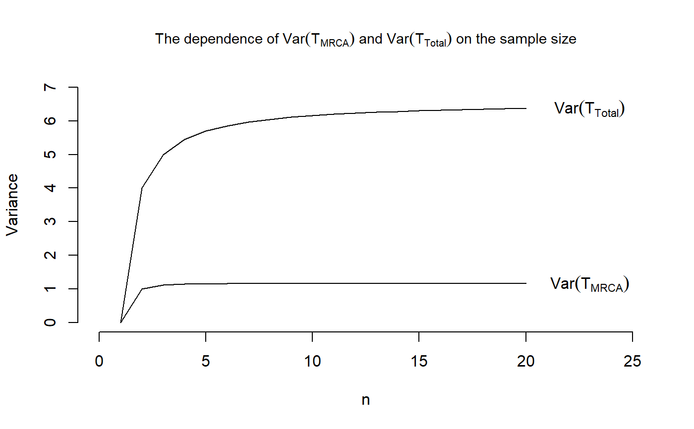

Mean and variance for both the discrete and continuous
phase-type distribution with initial distribution equal to
initDist and sub-transition/sub-intensity matrix equal to
P_Mat/T_Mat.
phmean(object) phvar(object)
| object | an object for which the mean or variance should be computed.
To be able to use these function,the object has to be of
class |
|---|
Mogens Bladt and Bo Friis Nielsen (2017): Matrix-Exponential Distributions in Applied Probability. Probability Theory and Stochastic Modelling (Springer), Volume 81.
phmean gives the mean and phvar gives the
variance of the phase-type distribution. The length of the output is 1.
In the discrete case, the phase-type distribution has mean
$$E[\tau] = initDist (I-P_Mat)^{-1} e + 1 - initDist e,$$
where initDist is the initial distribution, P_Mat is the sub-transition
probability matrix and e is the vector having one in each entry.
Furthermore, the variance can be calculated as
$$Var[\tau] = E[\tau(\tau-1)] + E[\tau] - E[\tau]^2,$$
where
$$E[\tau(\tau-1)] = 2 initDist P_Mat (I-P_Mat)^{-2} e + 1 - initDist e.$$
In the continuous case, the phase-type distribution has mean
$$E[\tau] = initDist (-T_Mat)^{-1} e,$$
where initDist is the initial distribution and T_Mat is the sub-intensity
rate matrix. Furthermore, the variance can be calculated in the usual way
$$Var[tau] = E[tau^2] - E[tau]^2,$$
where
$$E[\tau^2] = 2 initDist (-T_Mat)^{-2} e.$$
## We reproduce Figure 3.3 in John Wakeley (2009): ## "Coalescent Theory: An Introduction", ## Roberts and Company Publishers, Colorado. ## We define vectors holding the means and variances VecOfMeansMRCA <- replicate(20,0) VecOfVarsMRCA <- replicate(20,0) VecOfMeansTotal <- replicate(20,0) VecOfVarsTotal <- replicate(20,0) ## For n=2, we have that the initial distribution is initDist = 1 and ## the sub-transition probability matrix is T_Mat = -1 for T_MRCA and ## T_Mat = -1/2 for T_Total, ## hence TMRCA <- contphasetype(1,-1) TTotal <- contphasetype(1, -1/2) ## The mean is now VecOfMeansMRCA[2] <- phmean(TMRCA) VecOfMeansTotal[2] <- phmean(TTotal) ## and the variance is VecOfVarsMRCA[2] <- phvar(TMRCA) VecOfVarsTotal[2] <- phvar(TTotal) # For n=3, we have that the initial distribution is initDist = c(1,0) ## and the sub-transition probability matrices are T_Mat_MRCA = matrix(c(-3,3,0,-1), nrow = 2, byrow = TRUE) T_Mat_Total = matrix(c(-2,2,0,-1), nrow = 2, byrow = TRUE)/2 ## for T_MRCA and T_Total, respectively. ## Defining two objects of class "contphasetype" TMRCA <- contphasetype(initDist, T_Mat_MRCA) TTotal <- contphasetype(initDist, T_Mat_Total) ## Hence the means are given by VecOfMeansMRCA[3] <- phmean(TMRCA) VecOfMeansTotal[3] <- phmean(TTotal) ## and the variances are VecOfVarsMRCA[3] <- phvar(TMRCA) VecOfVarsTotal[3] <-phvar(TTotal) for (n in 4:20) { ## The initial distribution initDist <- c(1,replicate(n-2,0)) ## The sub-intensity rate matrix T_Mat <- diag(choose(n:3,2)) T_Mat <- cbind(replicate(n-2,0),T_Mat) T_Mat <- rbind(T_Mat, replicate(n-1,0)) diag(T_Mat) <- -choose(n:2,2) ## Define an object of class "contphasetype" obj <- contphasetype(initDist,T_Mat) ## Compute the mean and variance VecOfMeansMRCA[n] <- phmean(obj) VecOfVarsMRCA[n] <- phvar(obj) ## For T_total, we compute the same numbers ## The sub-intensity rate matrix T_Mat <- diag((n-1):2) T_Mat <- cbind(replicate(n-2,0),T_Mat) T_Mat <- rbind(T_Mat, replicate(n-1,0)) diag(T_Mat) <- -((n-1):1) T_Mat <- 1/2*T_Mat ## Define an object of class "contphasetype" obj <- contphasetype(initDist,T_Mat) ## Compute the mean and variance VecOfMeansTotal[n] <- phmean(obj) VecOfVarsTotal[n] <- phvar(obj) } ## Plotting the means plot(x = 1:20, VecOfMeansMRCA, type = "l", main = expression(paste("The dependence of ",E(T[MRCA])," and ", E(T[Total]), " on the sample size")), cex.main = 0.9, xlab = "n", ylab = "Expectation", xlim = c(0,25), ylim = c(0,8), frame.plot = FALSE)#> Warning: Fontmetrik für das Zeichen 0xa unbekannt#> Warning: Fontmetrik für das Zeichen 0xa unbekannt## And plotting the variances plot(x = 1:20, VecOfVarsMRCA, type = "l", main = expression(paste("The dependence of ",Var(T[MRCA]), " and ", Var(T[Total]), " on the sample size")), cex.main = 0.9, xlab = "n", ylab = "Variance", xlim = c(0,25), ylim = c(0,7), frame.plot = FALSE)